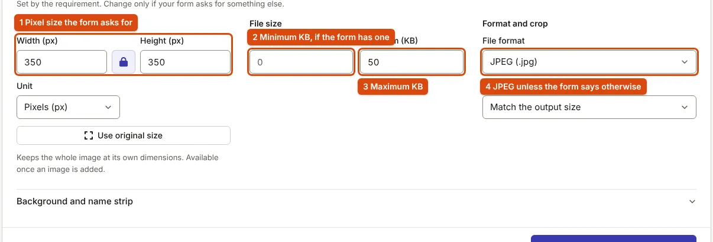

How to Get a Photo Under a KB Limit Without Blur
Crop first, set the pixel size second, compress last and only once. Measurements from our own resizer show why the order matters.
The short answer
Crop to what the form wants to see, set the pixel size the form asks for, and compress once from the original. If a limit still forces the quality down, reduce the pixel size further rather than the quality. The rest of this page shows why, with measurements from our own tool, and covers the cases where the method needs adjusting: minimum sizes, PNG files and signatures. For the exact clicks, see the tutorials on resizing a photo for a form and compressing an image to a KB limit.
Pixel size decides how sharp the result can be
A JPEG's size depends on how many pixels it has and how much detail each one keeps. A limit in KB is a budget shared by all the pixels, so the more pixels you keep, the less detail each one gets. We ran the same test portrait through the resizer with a 50 KB limit at four sizes. The tool always tries quality 0.95 first and lowers it only as far as the limit requires, so the quality it settles on shows how much each size had to give up:
At 350 × 450 px the photo fitted at 0.95 with half the budget unused. At 1200 × 1600 px the same limit forced the quality down to 0.55, where skin turns blotchy and edges show 8 × 8 blocks. Nothing about the photo changed, only the number of pixels sharing the 50 KB.
The same pattern holds at other limits. Under 20 KB, the portrait needed quality 0.92 at 350 × 450 px and 0.40 at 1000 × 1333 px. Under 100 KB, 0.89 at 800 × 1000 px and 0.73 at 1200 × 1600 px. The full tables are on the 20 KB, 50 KB and 10, 100 and 200 KB pages.
The method, step by step
- Start from the original file. Every JPEG save throws away detail, and the losses add up. A photo forwarded through a chat app or already shrunk for another form has lost detail you cannot get back.
- Crop to the subject. Head and shoulders for a photo, the ink for a signature. Forms that set a rule for this usually ask for the face to fill most of the photo. Pixels spent on background are bytes not spent on the face.
- Set the pixel size from the form. If the form gives one, use it exactly, for example a portal that asks for a 200 × 230 px photo. If it gives centimetres, convert with the DPI it states; see pixels, cm, DPI and KB. If it gives only a KB limit, choose a modest size such as 350 × 450 px for a portrait.
- Compress once, to the limit. Enter the maximum (and minimum, if there is one) and let the tool search for the highest quality that fits, instead of picking a quality number yourself.
- Check at 100% zoom. Eyes, hairline and the edges of the face should be crisp. If they are not, go back to step 3 and choose fewer pixels.

How the resizer finds the highest quality that fits
After cropping and resizing to the exact pixel size, the tool encodes the image at quality 0.95. If that is within the limit, it stops. If not, it checks that quality 0.05 fits at all (if even that is too large, it says so and suggests fewer pixels), then runs a binary search between the two: seven more encodings, each time keeping the best result that is at or under the limit. The limit is counted in bytes, with 1 KB = 1,024 bytes, so a 50 KB limit means at most 51,200 bytes, and the result panel shows the exact byte count.
When a range has a minimum and the image comes out smaller, the tool adds JPEG comment data to reach it. Comment data is ignored by image viewers, so the picture is unchanged. This matters for narrow ranges such as 20 to 50 KB: our 200 × 230 px portrait was 9.1 KB at quality 0.95, well under a 20 KB minimum, and was padded to 20.0 KB.
When the method needs adjusting
The file must be PNG
PNG is lossless, so there is no quality setting to lower (MDN image format guide). Our 350 × 450 px test portrait needed 196 KB as PNG, and the resizer reports that instead of producing a file that breaks the limit. If the form accepts JPEG, use it. If it requires PNG, the only lever is fewer pixels. To shrink several photos to one limit at once, the image compressor applies the same quality search to each file.
The form allows WebP
WebP usually stores a photo in fewer bytes than JPEG at a similar look: our portrait was 18.5 KB as WebP at 350 × 450 px against 26.5 KB as JPEG. Many application forms list only JPEG for photos, so check the form first; see JPEG, PNG or WebP.
Signatures
A signature is mostly flat white, which JPEG stores cheaply. Our 300 × 100 px test signature was 8.0 KB at quality 0.95; cleaned with the signature cleaner first, 6.3 KB. With signatures the usual problem is falling under a minimum, not exceeding a maximum.
The photo is still rejected
Size is one check among several. Background, lighting, face coverage and the file name are checked too; see photo upload errors and fixes.
Frequently asked questions
Why did my photo get bigger after resizing?
Usually because the output has more pixels than the input (enlarging adds pixels, not detail), the output is PNG, or it was saved at maximum quality. Keep the pixel size at or below the original and output JPEG.
Is 50 KB the same as 50,000 bytes?
Not in this tool: 50 KB is 51,200 bytes here. Portals rarely say which they use. If a file just under the limit is refused, lower the maximum by 1 KB.
Should I lower quality or pixel size first?
Pixel size, down to what the form allows. Then let the tool choose the quality.
Does compressing twice hurt?
Yes. Each JPEG save loses some detail. Always compress from the original, and if the result is not right, start again from the original rather than re-compressing the output.
Sources
- Library of Congress: JPEG Image Encoding Family, lossy compression and quality
- MDN Web Docs: Image file type and format guide, JPEG is lossy, PNG lossless
- JPEG committee: JPEG 1 (ISO/IEC 10918)
Figures on this page were measured with ApplyReady's own tools in a current browser. Found a mistake? Report an error.